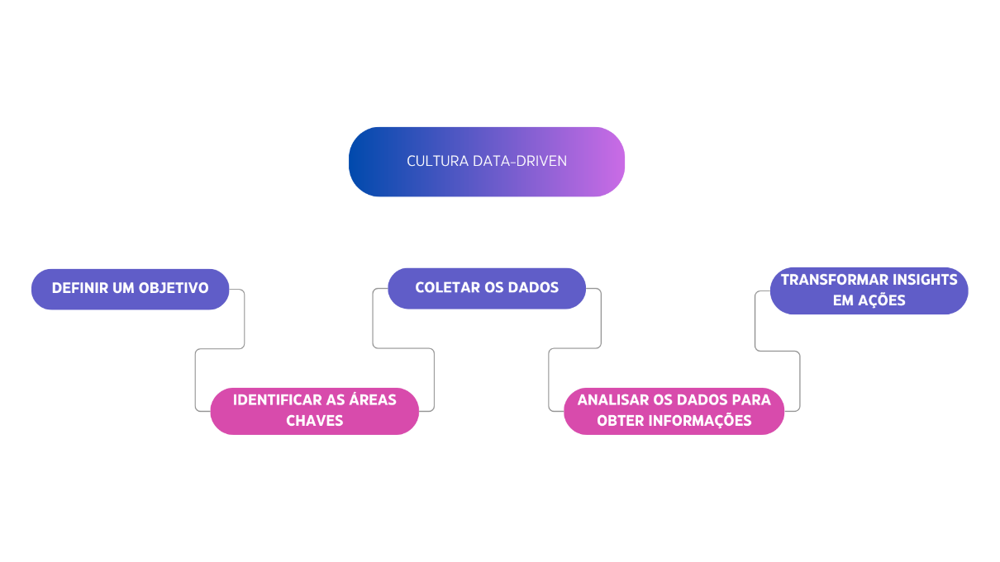
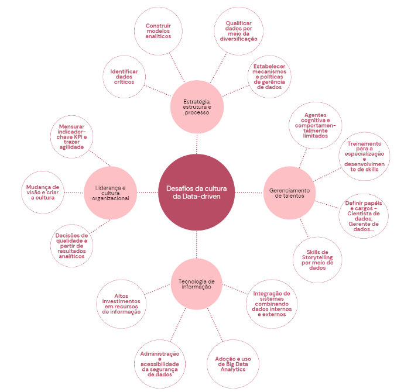
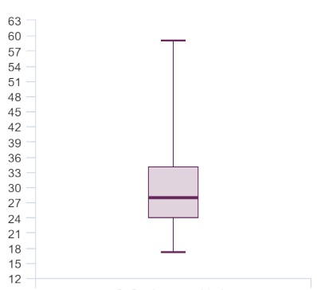
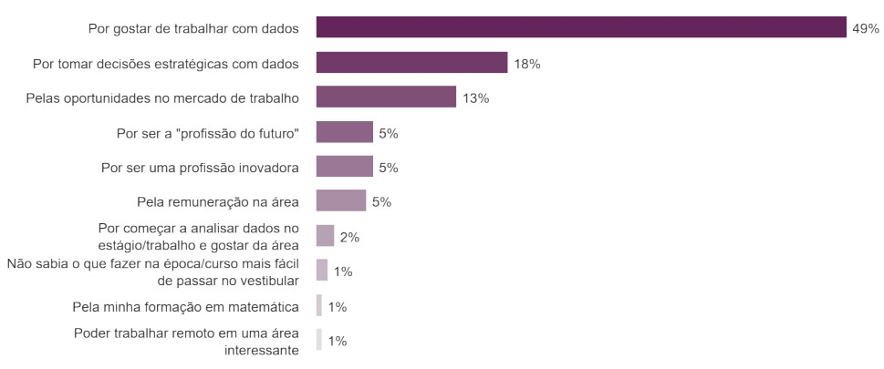
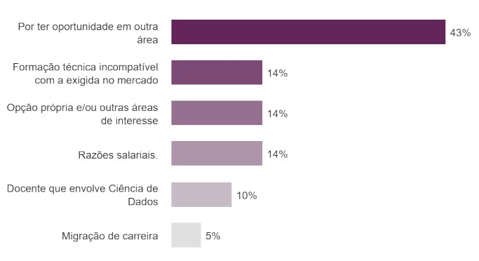
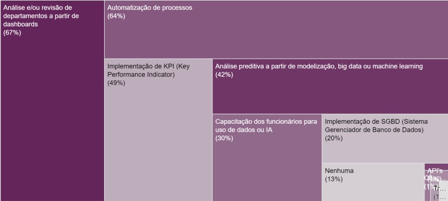

Resumo
Na sociedade conectada em que vivemos, milhares de dados são gerados a cada instante. Esses dados, se tratados e analisados, podem gerar insights ágeis nos negócios. Sob essa ótica, a análise centrada em dados impulsiona transparência e soluções exatas e humanizadas ao mesmo tempo, melhorando o desempenho no gerenciamento geral, assim como, prolifera a economia digital. Portanto, se tornou imprescindível a utilização da ciência de dados para negócios dentro das organizações e reconhecida a importância desse profissional, foi realizado um levantamento de dados com o objetivo identificar a percepção dos profissionais da área de dados sobre a sua carreira no Brasil. A amostra do estudo foi coletada através de um questionário com o público voltado à área de dados. Os dados obtidos foram analisados e indicaram que, o profissional da área de dados está recentemente inserido no mercado. Além disso, o principal motivo de escolher esta profissão é por gostar de trabalhar com dados, porém, algumas competências precisam ser melhor desenvolvidas, como a matemática e estatística. E no olhar de cenários futuros, a inteligência artificial não substituirá o ser humano. Como considerações finais, foi possível constatar que apesar dos desafios apresentados nas atividades cotidianas e o quadro atual de escassez de profissionais, a área de dados já se confirma como fundamental para as empresas.
Introdução
Cientistas de dados na área de negócios têm recebido grande destaque nos últimos anos, acompanhado de um aumento das demandas no mercado de trabalho, bem como, pela era da big data (MISHRA; BOSE; JAISWAL, 2021). Por este motivo, os autores apontam que muitas empresas estão contratando estes profissionais para aumentar suas receitas e desenvolver seus negócios. Além disso, existem evidências de que a tomada de decisão orientada a dados e tecnologias de big data melhoram substancialmente o desempenho nos negócios (PROVOST; FAWCETT, 2016). Em complemento aos autores, um estudo realizado por Muller, Fay e Brocke (2018), mostrou que os investimentos em ciência de dados estão associados a uma melhoria de 3% a 7% na produtividade dos negócios. Os autores concluíram que a procura pelos profissionais da área ampliou-se significamente o número de contratações nas empresas, desta forma, países como Brasil se encontraram em um estágio em que a demanda veio antecipadamente à oferta de profissionais capacitados para o trabalho. O relatório britânico encomendado pela Joint Information Systems Committee (SWAN; BROWN, 2008) inerente às habilidades requeridas a carreira dos cientistas de dados, definiu este profissional como aquele que trabalhava in loco onde as pesquisas eram realizadas e em estreita colaboração com os pesquisadores, ou ainda, em grupos de cientistas nos centros de dados, os quais estavam envolvidos na investigação criativa e na análise de dados, oferecendo soluções tecnológicas para o manuseio e uso de dados digitais (SWAN; BROWN, 2008). Com o passar dos anos, estudos como o da empresa de consultoria CrowdFlower (2016), mostraram que as atividades mais desempenhadas pelos cientistas de dados, passaram a envolver o tratamento e a organização de dados, a exploração de correlação e de padrões no conjunto de dados e o refinamento de algoritmos. Oportuno abordar ainda que a aplicação da ciência de dados nas organizações por conta do volume de dados armazenados, revelou um processo fundamental para produtividade e vantagem competitiva, a tomada de decisão a partir de dados (AMIRIAN; LOGGERENBERG; LANG, 2017). Essa cultura, chamada de data-driven, traz resultados assertivos para estratégias definidas pelos gestores de negócios e quadros com menores chances de erros (SANDES, 2019). Assim, é inegável que toda organização precisa de um processo de tomada de decisão eficiente. Em consonância à abordagem de Sandes (2019) valem ressaltar que com uma maior e mais recente evolução da carreira, estes profissionais passaram a mudar seu comportamento e seu modo de atuação para o mundo dos negócios, visto que muitas organizações que utilizam a ciência de dados como vantagem competitiva demandam constantes atualizações sobre a análise de dados do mercado (HAZEN et al., 2014). Programa de Apoio à Iniciação Científica - PAIC 2022-2023 32 Vicario e Coleman (2019) corroboram com as afirmações dessa evolução profissional, explanando que os cientistas de dados passaram a ser mais criativos, centrados para o negócio e constantemente atentos às vantagens de ter um intercâmbio aberto e livre com especialistas em diferentes áreas. Desta forma, a aplicabilidade deste estudo justifica-se pela necessidade de compreender a percepção dos profissionais atuantes na área de dados, avaliando a sua participação na solução de problemas de negócios, na visão do próprio profissional e dentro do cenário nacional. Partindo da premissa que esse artigo será um complemento às aplicações já existentes em outras visões, como de gestores e empresas, desta forma, questiona-se: Qual a percepção dos profissionais da área de dados sobre a carreira no Brasil? Estabelecendo como objetivo geral identificar a percepção dos profissionais da área de ciência de dados sobre a sua carreira no Brasil, e como objetivos específicos, buscaram identificar quais fatores levaram a escolher a carreira de ciência de dados, identificar quais competências foram adquiridas atuando como cientista de dados, descrever quais soluções para negócios foram criadas através da sua atuação como cientista de dados e verificar a percepção dos profissionais na área de ciência de dados para negócios com cenários futuros para esta profissão.
Fundamentação Teórica
1. Ciência de dados
O aumento contínuo de dados produzido pela internet e por qualquer sensor acoplado a equipamentos modernos entrega uma enorme quantidade de dados, e se as empresas não forem capazes de gerenciar e processar os dados a seu favor, elas serão superadas pelos concorrentes. Este é o cenário que deu origem à Ciência de Dados (VICARIO; COLEMAN, 2019). Originalmente, a denominação Data Science foi utilizada pelo ganhador do Prêmio Turing, Peter Naur, em 1960, como sinônimo de ciência da computação. Mais tarde, em 1974, Naur usou o termo Data Science para referir-se a métodos de processamento de dados em toda a sua gama de aplicações. E em 1996 que o termo apareceu em um escrito público pela primeira vez. Finzer (2013) relata que o termo ciência de dados começa a ser difundido a partir de 2001, em que, a demanda nas organizações por profissionais com capacidades técnicas e analíticas para lidar com grande volume de dados ampliou-se, conforme foi elencada como uma das profissões de maior crescimento pelo Fórum Econômica Mundial 2020 e anunciada como a “profissão mais sexy” do século XXI pela Harvard Business Review (DAVENPORT; PATIL, 2012). Para Castanha (2021), a Ciência de Dados para negócios, envolve a extração de insights de ampla quantidade de dados aplicando experiência no mercado e em negócios, habilidades de programação, além de conhecimentos matemáticos e estatísticos. De acordo com Breternitz, Lopes e Silva (2015), a ciência de dados é extensa e não se limita apenas a Big Data. O autor justifica que conjuntos de dados de menor volume podem conter informações valiosas e de grande potencial, porém, podem ser muito trabalhosos de se analisar. Dessa forma, Curty e Cervantes (2016), asseguram que a ciência de dados é uma área de estudo interdisciplinar e intensivamente computacional, com vistas a atribuir sentido e extrair insights de dados aplicáveis a diferentes domínios e contextos, para a resolução de problemas práticos e reais. Silva (2018), acrescenta que, as análises em ciência de dados são divididas em quatro categorias, as quais são a descritiva, em que compreende o que está ocorrendo e serve como complemento de um fato, justificativa ou argumento apresentado. Reis e Reis (2002) menciona a diagnóstica que busca entender por qual motivo ocorreu o fato, procurando uma relação de causa e efeito a partir dos dados para compreensão do contexto. Siegel (2017), afirma a preditiva com o objetivo de identificar tendências futuras e prever algum comportamento, e a prescritiva que traça possíveis consequências, como exemplo, definir o tempo necessário para evacuação em edifícios de grande porte no caso de incêndio (MATOS, 2017). Ao analisar as informações acima, é inegável a necessidade no mundo dos negócios da aplicação da ciência de dados, visto que, dados permitem que empresas e organizações possam compreender da melhor forma suas condições, podendo aprimorar e evitar riscos.
2. Competências em Ciência de dados
Assim como toda profissão, o profissional de ciência de dados possui competências fundamentais para atuar no mercado de trabalho, e essas seriam segundo Davenport (2014, p. 85) “[ser] um hacker, um cientista, um analista quantitativo, um conselheiro de confiança e um expert em negócios”. Segundo Vicario e Coleman (2019), em primeiro lugar, o cientista de dados deve ser capaz de analisar problemas de maneira lógica e com compreensão do negócio subjacente real ou questões práticas. Rodrigues, Duarte e Dias (2017), consideram que na área de dados não há uma formação exata e sim campos relacionados, como estatística, ciência de computação e programação. Radovilsky et al. (2018) corroboram caracterizando o trabalho do cientista de dados como mais técnico (envolvendo programação e software). Ademais, conforme (TAB. 1) eles mencionam os termos frequentemente utilizados no mundo dos negócios, a considerar Machine Learning em primeiro lugar, com 71,6%.
| TERMO | % | TERMO | % |
|---|---|---|---|
| Machine learning | 71.6% | Ferramentas | 15.8% |
| Analítico | 47.0% | Estatísticas | 15.4% |
| Python | 42.0% | Processamento de dados | 14.8% |
| Big data | 28.2% | Linguagem natural | 14.2% |
| Análise | 26.8% | HADOOP | 13.4% |
| Algoritmos | 26.4% | Ambiente | 12.0% |
| Comunicação escrita | 24.8% | Mineração de dados | 11.8% |
| SQL | 22.6% | Tecnologias | 11.6% |
| R | 20.0% | Colaboração | 11.4% |
| Técnicas | 18.6% |
FONTE: Radovilsky et al. (2018)
Conforme Breternitz, Lopes e Silva (2015), são necessários novos conhecimentos e habilidades heterogêneas e únicas para o cientista de dados especificamente. E por conta da escassez de oferta de cursos de especialização da área de ciência de dados ainda não é claro quais habilidades particulares o cientista de dados deve possuir (SANDES, 2019). Entretanto, Sandes conclui que essa situação inexata traz um leque de variedades para o profissional, oferecendo a escolha de diferentes atuações e aplicações de conhecimento, fazendo assim possível o compartilhamento de diferentes visões por vários cientistas de dados, especializados cada um em sua função, e fornecendo uma tomada de decisão mais precisa.
3. Perfil do Cientista de dados
Por exigência do mercado, o cientista de dados aderiu a uma diversidade de habilidades técnicas em seu perfil. Paralelo a isso, Idoine (2018), da empresa Gartner definiu o cientista de dados como um novo profissional emergente que foge dos campos mais profundos de estatística e análise de dados, além disso, como um profissional que tem uma visão gerencial e toma decisões de maneira racional e eficiente, com capacidade de análise, criatividade e que se mantém atualizado, ou seja, constantemente em busca de novas tecnologias e técnicas (NEVES, 2021). Os autores nos trazem que o surgimento do cientista de dados teve origem a partir do grande volume de dados, com essa visão em mente, Miller (2013) menciona o profissional emergente como o mágico da era do big data, visto que, a partir de dados esse cria narrativas para explicá-los e traz sugestões de tomada de decisão para a empresa, além disso, o profissional cientista de dados tem a tendência da curiosidade e fortes habilidades sociais como sensibilidade para questões de negócios e empatia pelo cliente - se encaixando com as soft skills do currículo (DAVENPORT; PATIL, 2012). Vicario e Coleman (2019), afirmam que, o cientista de dados é a pessoa que entende como os problemas reais se relacionam com os dados disponíveis e, portanto, pode fazer o melhor uso dos dados para criar valor agregado, além disso, o cientista de dados gerencia os dados, garante sua integridade e acessibilidade e extrai informações úteis dos dados para fornecer conhecimento e previsão e apoiar a tomada de decis Em complemento aos autores acima, (SCHUTT; O’NEIL, 2014) mencionam que no perfil do cientista de dados é essencial estar alinhado às tendências do mercado e na evolução da organização em que se dedica.
4. Cultura Data-driven
A tomada de decisão e o planejamento estratégico na coleta e análise de informações é uma metodologia utilizada na ciência de dados, com intuito de promover melhores resultados às organizações (MEDEIROS; HOPPEN; MAÇADA, 2021). Oliveira (1992), no mesmo sentido, compreende a sua definição de tomada de decisão como a conversão de informações em ações organizacionais. Stair e Reynolds (2008), sustentam que as tomadas de decisão aplicadas definem o norte da organização, assim, indicam os objetivos de forma a auxiliar os funcionários e o negócio a atingir suas metas. É importante ressaltar que, ao utilizar ferramentas da cultura data-driven, as empresas ganham competitividade (EREVELLES; FUKAWA; SWAYNE, 2016), além disso, a adoção da cultura é essencial para atingir resultados assertivos como: definir perfil do cliente, porcentagem de lucro ou prejuízo e analisar a concorrência (SANDES, 2019). Assim, os autores enfatizam que, a partir da melhor tomada de decisão, as chances de erros e danos aos negócios serão menores. Patil e Mason (2015), complementam que a melhor forma de aplicar a cultura é manter uma base de dados limpa, que segundo os autores, é considerado a maior atribuição do cientista de dados. Além disso, os autores apontam as principais características de uma organização data-driven:
Seguindo raciocínio da FIG. 1, Patil e Mason (2015), apontam que na criação da cultura data-driven deve-se inicialmente definir um objetivo, na sequência, saber o que procura e o que quer resolver é fundamental para iniciar corretamente a implementação. Depois de estabelecer uma estratégia, a equipe deve ser preparada, por meio de treinamentos para que todos estejam totalmente integrados e capacitados, e assim, sendo possível identificar os pontos chaves a serem trabalhados. Após esses dois passos, será possível seguir as últimas etapas que os autores Patil e Mason (2015) finalizam para o investimento tecnológico. Essas são: a coleta de dados, análise de dados e realização de ações a partir dos insights tirados. Em suma, uma empresa orientada a dados deve ter aplicados softwares e plataformas de armazenamento que possibilitem coletar relatórios gerenciais que serão as bases para a análise de dados. Exemplo desses são ERP, SCM e CRM - respectivamente sendo Entreprise Resource Planning, Supply Chain Management e Customer Relationship Management, desta forma, empresas que aplicam esses sistemas operacionais armazenam um vasto volume de dados que podem ser analisados e trabalhados (BRYNJOLFSSON; HITT; KIM, 2011). Vale apontar que, no mundo dos negócios, trabalhar com dados já não é mais um diferencial competitivo e sim uma necessidade para sobreviver e atuar no mercado (HAZEN et al., 2014). Portanto, é inevitável a inserção da cultura data-driven para o crescimento e alavancar a produtividade de uma empresa. Segundo Laskoski (2017), a dependência das organizações da inteligência que os processos de tomada de decisão são executados gera extrema responsabilidade ao gerenciador dessa atividade. E o profissional responsável por fazer e controlar a cultura data-driven é o cientista de dados, em que, para realizar essa atividade ele precisa apresentar certas características, como ser autodidata, persistente, esforçado e proativo, ter uma visão de negócio e principalmente grande capacidade analítica (LASKOSKI, 2017).
5. Desafios para desenvolver Ciência de dados para negócios
Os desafios que o profissional cientista de dados tem, tanto no Brasil quanto em outros países, são as necessidades de uma base de dados com informações diversificadas para uma análise precisa, a dificuldade de disponibilidade de acesso aos dados, ter de lidar com gestores que não aplicam os resultados e respostas adquiridas pelas análises geradas (MEDEIROS; HOPPEN; MAÇADA, 2021) e também a Lei Geral de Proteção de Dados Pessoais (LGPD) que trouxe a um curto prazo a dificuldade da aplicação da cultura data-driven (GARCIA et al., 2020). Para Frisk e Bannister (2017), a aplicação da ciência de dados pode melhorar radicalmente o desempenho de uma organização, mas para alcançar tais melhorias, os gestores precisam mudar sua cultura de tomada de decisão. Além disso, Medeiros, Hoppen e Maçada (2021), definem alguns desafios para o desenvolvimento da ciência de dados para negócios, conforme a figura abaixo:
Em síntese, os desafios são divididos em quatro dimensões no framework apresentado acima. A partir de pesquisa e análise de conjunto de estudos sobre o tema, os autores delimitam estas áreas sendo liderança, gerenciamento de talentos, cultura organizacional e tecnologia. Na concepção dos autores, os principais desafios dentro dessas áreas é encontrar um cientista de dados com skills específicas, como habilidade de tomada de decisão e identificar um profissional verdadeiramente efetivo para o negócio. Sob outra ótica, uma grande barreira encontrada é um modelo de governança sustentável com considerações sociais, culturais e econômicas. Esse é essencial para a ciência de dados independente da área aplicada, visto que, modelos de negócios robustos precisam equilibrar em todos os possíveis interesses de envolvidos, assim como garantir uma cultura sistemática e saudável (MAYERNIK et al., 2017). No mesmo plano, os autores mencionam que para a ciência de dados ser eficiente, ao se concentrar na solução de problemas do mundo real, os cidadãos devem receber educação em dados. Dessa forma, cultivar aqueles por meio da codificação para limpeza, análise e visualização de dados, é feito com o maior objetivo de abranger um quadro de dados inclusivo e responsável. Neste contexto, o cientista de dados pode passar por diversos desafios que constantemente refletem no crescimento e evolução profissional. Apesar disso, o cientista de dados deve estar preparado para o convívio com problemáticas como essas, sendo assim possível evoluir e transformar o ambiente de negócios a favor da ciência de dados.
6. Benefícios percebidos pelos usuários de Ciência de dados
Um estudo recente de Medeiros, Hoppen e Maçada (2021), realizado junto a gestores, com objetivo de identificar os benefícios da ciência de dados para negócios, mostrou que a profissão passou a abranger suporte para análise de dados e geração de insights com agilidade, uma cultura orientada a dados, além de uma melhoria da qualidade dos dados, que facilitou o entendimento do ambiente de negócios, a detecção de maiores oportunidades e uma melhor gestão de desempenho organizacional. Além disso, as organizações que usam seus dados de negócios para orientar as decisões, podem alcançar desempenho superior através da ciência de dados (BRYNJOLFSSON; HITT; KIM, 2011). Medeiros, Hoppen e Maçada (2021), define quatro benefícios da ciência de dados para negócios nas organizações, conforme a TAB. 2:
| Benefício | Descrição |
|---|---|
| Qualidade dos dados | Ajuda a criar uma cultura de decisão orientada por dados; reduz a incerteza e melhora a consistência e a confiabilidade dos dados e amplia a visão de gerenciamento sobre big data. |
| Inteligência Analítica | Fornece suporte para análise, avaliação, previsão e otimização; agiliza a análise de dados e a geração de insights. |
| Capacidades Dinâmicas | Facilita a integração e a comunicação; facilita a geração de conhecimento; ajuda na compreensão do ambiente de negócios e na detecção de oportunidades. |
| Vantagens Competitivas | Facilita a gestão do desempenho organizacional e melhora a competitividade. |
FONTE: Medeiros, Hoppen e Maçada (2021)
Desta forma, é evidente que, apesar dos desafios, a área de ciência de dados é benéfica às organizações empresariais, trazendo produtividade, performance, lucro e consequentemente um diferencial no mercado (MEDEIROS et al., 2021).
Metodologia
1. Modelo de pesquisa
Este estudo baseou-se num método quantitativo de pesquisa, de caráter descritiva-exploratória. Nesta seção temos como objetivo apontar os procedimentos realizados para a análise do tema definido, o qual é a percepção dos profissionais da área de dados sobre a carreira no Brasil. O método utilizado tem como base reunir conjunto de perspectiva de pessoas que estão envolvidas na temática, no caso seriam os profissionais da área de dados. Segundo Günther (2006) a pesquisa quantitativa segue como estratégia o controle máximo sobre a pesquisa, podendo produzir ambientes artificiais com intuito de eliminar interferência de variáveis - sendo opiniões do pesquisador e variáveis pessoais, caracterizado pelo autor como participante passivo. Dessa forma, os resultados dessa pesquisa podem ser quantificados e tem como visão central a objetividade (FONSECA, 2002). O foco da abordagem do estudo foi a análise descritiva-exploratória das profissões da área de dados no Brasil, com objetivo de “proporcionar maior familiaridade com o problema, com vistas a torná-lo mais explícito ou a construir hipóteses” (GIL, 2002, p. 41).
2. Coleta de dados
O método utilizado para a coleta de dados foi a aplicação de questionário (formulário eletrônico via Google forms). Faleiros et al. (2016) afirmam que a utilização da internet para divulgação e coleta de dados da pesquisa traz agilidade e possibilita menores gastos no processo, assim como também, potencializa e é mais efetiva que outros meios já muito utilizados no passado. Então, a coleta de dados ocorreu por meio dos canais digitais com os profissionais que exercem a função na área de dados no Brasil.
Análise dos Resultados
Após coletar as respostas obtidas, foi realizada a consistência dos dados, além de descartar os que selecionaram a opção “não” para o termo de ciência livre esclarecido. E por se tratar de um estudo quantitativo, a análise dos dados foi realizada com a utilização do software Sphinx IQ2 e o Power BI a fim de definir os objetivos de pesquisa. A partir dos resultados foi possível criar o perfil geral do profissional da área de dados. Tendo 168 participantes e destes 24,8% atuavam como cientista de dados, e por não haver diferença entre o perfil do profissional da área de dados comparado com o cientista de dados, os resultados apresentados serão gerais. Foi possível identificar que 73% pertencem ao sexo masculino e 27% ao feminino. A idade dos participantes varia entre 17 e 59 anos, com média de 29 anos e mediana 28 anos. O maior nível de escolaridade entre os respondentes está entre estudantes da graduação com 31%, Pós-Graduação com 27% e graduação/bacharelado completo com 26%. Apenas 1% dos respondentes não tinham formação. Na amostra, a maioria dos participantes residem na região Sul (56%) e Sudeste (31%) e a área de formação com 55% em ciências ou matemática ou computação e 27% em ciências sociais, negócios ou direito.
Em relação à atividade profissional, 64% estão trabalhando na área de dados com contrato CLT ou pessoa jurídica e 18% não estão trabalhando, destes, o principal motivo é por ter oportunidade em outra área (43%), conforme o GRÁF. 2.
Ainda considerando o profissional que está no mercado de trabalho na área de dados, demonstra que a maior parte dos respondentes têm menos ou igual a 2 anos de experiência na área. Em relação ao nível de experiência, 37% dos respondentes estão como júnior, 31% sênior e 21% pleno. E verificou-se que 51% dos respondentes trabalham 100% remotamente e 49% atuando no segmento de tecnologia/digital. Após a análise do perfil do profissional da área de dados, buscamos compreender quais os principais fatores levaram a escolher a carreira de dados, e conforme o GRÁF. 3, nota-se que, 49% afirmam gostar de trabalhar com dados, 18% por tomar decisões estratégicas com dados e 13% pelas oportunidades no mercado de trabalho, além de outros motivos que não mostraram significância.
Com a finalidade de identificar quais competências foram desenvolvidas na atuação na área de dados, foi avaliado em uma escala com notas de 1 a 5 considerando um para “não desenvolvi nada” até cinco para “desenvolvi muito”. Assim, a TAB. 3 encontram-se as médias, desvios-padrão para analisar a variabilidade, notas mínimas e máximas e mediana, sendo avaliados dez competências, as quais cinco foram totalmente significativas: “Pensamento crítico” que obteve maior média 4,36 (DP 0,79), seguido por “Curiosidade intelectual” com média 4,39 (DP 0,80), “Capacidade de preparar os dados para análises eficazes” com média 4,34 (DP 0,89) e a competência “Solução proativa de problemas” de média – 4,23 (DP 0,85). Em contraposição, três competências ainda não foram muito bem desenvolvidas na área de dados, considerando: “Capacidade de aplicar adequadamente conceitos de matemática e estatística” com média 3,68 (DP 1,03), “Senso comercial” com média 3,40 (DP 1,19) e “Capacidade de empregar o aprendizado de máquina e a inteligência artificial (IA)” com a menor média de 3,08 (DP 1,43).
| Competência | MÉDIA | MEDIANA | DESVIO PADRÃO | MÁXIMO | MÍNIMO |
|---|---|---|---|---|---|
| Pensamento crítico | 4,36 | 5 | 0,79 | 5 | 2 |
| Curiosidade intelectual | 4,39 | 5 | 0,80 | 5 | 1 |
| Capacidade de preparar os dados para análises eficazes | 4,34 | 5 | 0,89 | 5 | 1 |
| Solução proativa de problemas | 4,23 | 4 | 0,85 | 5 | 1 |
| Comunicação eficaz | 3,96 | 4 | 0,95 | 5 | 1 |
| Capacidade de utilizar plataformas automatizadas | 3,89 | 4 | 1,03 | 5 | 1 |
| Capacidade de criar códigos eficientes e fáceis de manter | 3,87 | 4 | 1,05 | 5 | 1 |
| Capacidade de aplicar adequadamente conceitos de matemática e estatística | 3,68 | 4 | 1,03 | 5 | 1 |
| Senso comercial | 3,40 | 3 | 1,19 | 5 | 1 |
| Capacidade de empregar o aprendizado de máquina e a inteligência artificial (IA) | 3,08 | 3 | 1,43 | 5 | 1 |
| TOTAL | 3,92 | 4 | 1,11 | 5 | 1 |
FONTE: As autoras (2023)
Focando no portfólio do profissional da área de dados, e afirmando as competências mencionadas na fundamentação teórica, buscamos descrever quais as principais soluções de impacto foram criadas através da atuação como profissional na área de dados, cujos dados foram representados no mapa de árvore do GRÁF. 4.
Apresentando nas maiores áreas do gráfico as soluções “Análise e/ou revisão de departamentos a partir de dashboards” com 67% e “Automatização de processos” com 64% na amostra. Seguido novamente entre porcentagens próximas em “Implementação de KPI (Key Perfomace Indicator)” e “Análise preditiva a partir de modelização, big data ou machine learning”, respectivamente, 49% e 42%. Vale ainda apontar as soluções de menor porcentagem em relação ao total, sendo “API’s”, “Criação de sistemas de recomendação”, “Criação de um dashboard de dados financeiros públicos”, “IA para detectação precoce de patologias no radiodiagnóstico médico” e “Troca de sistemas mais baratos e mais eficientes” todas essas com 1%. Quando questionados sobre a percepção em relação a cenários futuros para as profissões na área de dados, em uma escala com notas de 1 a 5, considerando um para “discordo totalmente” e cinco para “concordo totalmente” (TAB. 4), os respondentes afirmam fortemente que “A inteligência artificial criará novos trabalhos” com a maior média de 4,23 (DP 0,88), seguido por “Muitos negócios tornaram-se mais previsíveis e eficientes” com média 4,15 (DP 0,83), “A maneira de trabalhar irá mudar com média 4,21 (DP 0,84) e “Maior rigor à regulamentos de privacidade de dados” com média 4,10 (DP 1,04). E os respondentes afirmaram não concordar quanto “A inteligência artificial substituirá o ser humanos”, ficou com média de 2,27 (DP 1,15).
| Cenário | MÉDIA | MEDIANA | DESVIO PADRÃO | MÁXIMO | MÍNIMO |
|---|---|---|---|---|---|
| Muitos negócios tornar-se-ão mais previsíveis e eficientes | 4,15 | 4 | 0,83 | 5 | 2 |
| A inteligência artificial criará novos trabalhos | 4,23 | 4 | 0,88 | 5 | 1 |
| A maneira de trabalhar irá mudar | 4,21 | 4 | 0,84 | 5 | 1 |
| Maior rigor a regulamentos de privacidade de dados | 4,10 | 4 | 1,04 | 5 | 1 |
| Terá uma maior transparência para usuários corporativos (confiança nos negócios) | 3,65 | 4 | 1,13 | 5 | 1 |
| A inteligência artificial substituirá o ser humano | 2,27 | 2 | 1,15 | 5 | 1 |
| TOTAL | 3,77 | 4 | 1 | 5 | 1 |
| FONTE: As autoras (2023) | |||||
FONTE: As autoras (2023)
Na continuidade da análise dos dados foi criado um dashboard para visualização dos dados e possibilitando realizar alguns filtros, com a ferramenta Microsoft Power BI, conforme o seguinte endereço:
Considerações Finais
O presente trabalho apresenta o perfil do profissional na área de dados e as competências requisitadas pelo mercado de trabalho, além de apontar benefícios e desafios na carreira. Por meio dos dados coletados e análises foi possível atender o objetivo geral e objetivos específicos. Dessa forma, após a coleta e análise completa dos dados obtidos, foi possível identificar que a carreira de dados ainda está a se desenvolver no Brasil, visto que, a maior parte dos respondentes estão de 1 a 2 anos inseridos no mercado de trabalho. Vale ressaltar que mesmo a área de dados não estando tão difundida, os profissionais iniciantes estão entrando no mercado pelo interesse em trabalhar com dados, sendo assim, a curiosidade de algo novo. Apesar disso, a demanda por esses profissionais está aumentando significamente mesmo sendo muito recente. Além disso, foi possível concluir que majoritariamente as vagas ocupadas no mercado atualmente é de analista de BI - sendo esse o desenvolvedor de dashboards e experiente em banco de dados, e estando em segundo lugar de cientista de dados, o qual focamos em nosso artigo na sua origem e relevância ao mercado. Essas profissões se difundem em suas atividades, mas são e sempre serão totalmente ligadas a área de dados. Foi também identificado que as competências técnicas em matemática e estatística, ter o senso comercial e a capacidade de empregar o aprendizado de máquina, precisam ser melhores desenvolvidas nestes profissionais. E pensando em cenários futuros, a inteligência artificial não substituirá o ser humano. Sugere-se que novos estudos sejam realizados, com um número maior de respondentes, além de poder evidenciar a evolução das competências do profissional na área de dados.